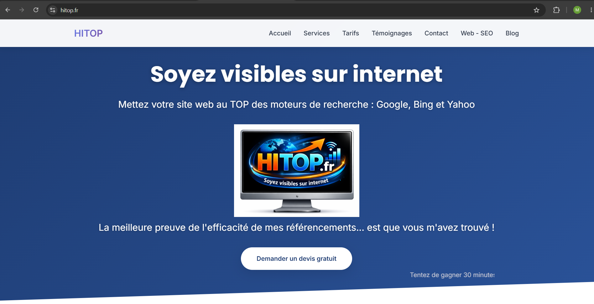
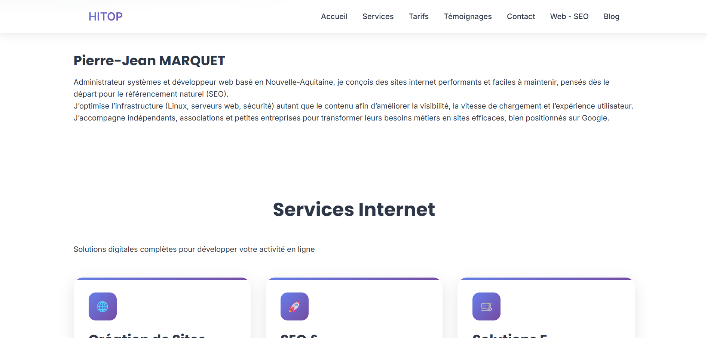
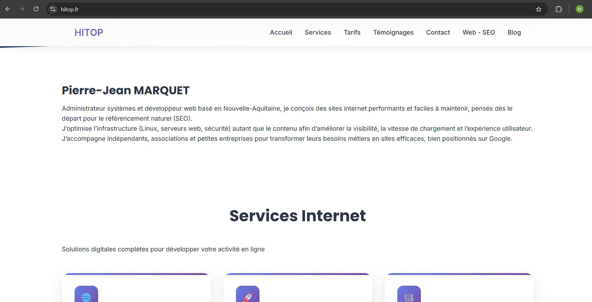
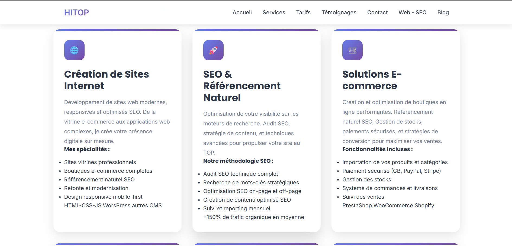
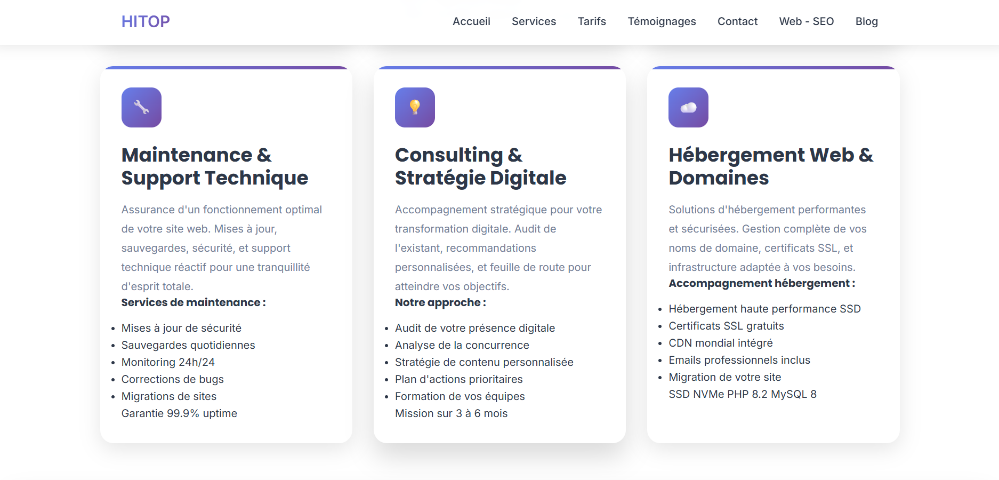
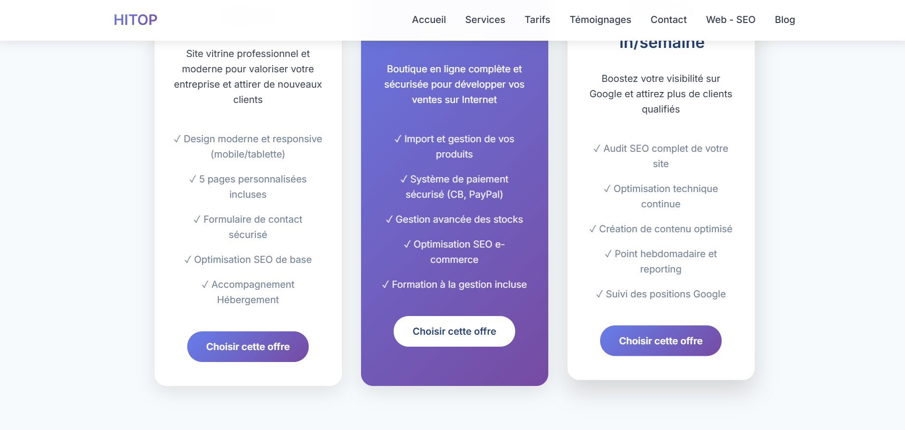
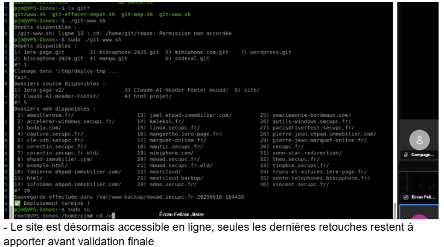

Refonte d'un site vitrine et amélioration de la présence en ligne
Durant mon stage chez HITOP, j'ai travaillé sur l'amélioration du site vitrine de l'entreprise. L'objectif était de rendre la présentation plus professionnelle, de mieux guider les visiteurs vers les services proposés et de renforcer la crédibilité du site grâce à une interface plus claire.
Contexte du projet
HITOP accompagne des entreprises dans la création de sites internet, le référencement naturel et la mise en place d'une présence digitale. Le site devait présenter clairement les services, rassurer les visiteurs et faciliter la prise de contact. Mon rôle a été d'intervenir sur des pages existantes et sur de nouvelles sections afin d'améliorer la lisibilité, l'organisation des informations et l'aspect visuel général.
Le travail portait autant sur la forme que sur le fond : structure HTML, mise en page CSS, adaptation responsive, hiérarchisation des titres, mise en valeur des offres et amélioration des blocs destinés à inciter l'utilisateur à demander un devis.
Ce que j'ai réalisé
- Refonte de la page d'accueil pour obtenir une entrée plus moderne et plus lisible.
- Création et amélioration de blocs de présentation pour les services, les offres et les appels à l'action.
- Optimisation de sections importantes comme les tarifs, les témoignages clients et le footer de contact.
- Correction d'éléments visuels pour obtenir une interface plus homogène entre les pages.
- Adaptation responsive afin de conserver une navigation propre sur ordinateur et mobile.
- Participation à l'optimisation SEO avec des contenus mieux structurés et plus compréhensibles.
- Suivi de l'avancement avec des échanges réguliers, des captures et des ajustements progressifs.
Avant / après


Captures principales




Mise en ligne et résultat
Le résultat final est un site plus cohérent, plus clair et mieux orienté vers les besoins des visiteurs. Les services sont davantage mis en avant, les appels à l'action sont plus visibles et l'ensemble donne une image plus professionnelle de l'entreprise.
